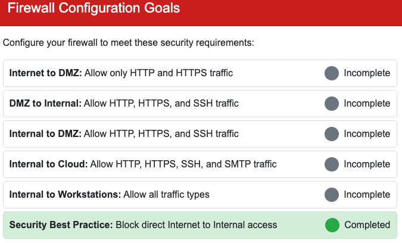

Visual Firewall Thinger
We dive into an interactive simulator to lock down network traffic and validate proper segmentation. It turns out configuring Access Control Lists is actually sweeter than a holiday whoopie pie.
Challenge Overview
We meet Elgee in the hotel for a quick lesson on network defense. The challenge presents us with a five-component network topology that is currently wide open to attack. Our task is to configure the firewall rules to permit necessary business operations while blocking insecure routes between the Internet, DMZ, Internal Network, and Cloud Services.
As we successfully configure each component, the status will be shown as completed.

1. Internet to DMZ
- Action: Allow HTTP and HTTPS.
- Reasoning: The Demilitarized Zone (DMZ) is designed to expose public-facing services to the untrusted Internet. We open web traffic ports 80 and 443 so external users can access the public web servers hosted here. We strictly block administrative protocols like SSH from the public internet to reduce the attack surface.
2. DMZ to Internal Network
- Action: Allow HTTP, HTTPS, and SSH.
- Reasoning: While the DMZ is untrusted, specific internal resources might need to pull data from web servers or web applications. We also allow SSH here to likely permit jump-box style management or secure file transfers from the DMZ back to internal log servers.
3. Internal Network to DMZ
- Action: Allow HTTP, HTTPS, and SSH.
- Reasoning: Internal administrators need the ability to manage the public servers. By allowing SSH and web protocols from the Internal side, admins can maintain the DMZ assets without exposing those management interfaces to the wider Internet.
4. Internal Network to Cloud Services
- Action: Allow HTTP, HTTPS, SSH, and SMTP.
- Reasoning: Modern infrastructure relies heavily on cloud integration. We allow web traffic for general SaaS usage and SSH for managing cloud instances. Crucially, we also allow SMTP (Simple Mail Transfer Protocol) here to enable internal email servers to communicate with external mail providers or cloud email relays.
5. Internal Network to Workstations
- Action: Allow All Traffic.
- Reasoning: This represents the highly trusted zone inside the perimeter. Traffic between the internal core and employee workstations is generally unrestricted to facilitate file sharing, printing, active directory services, and internal communications.
6. Security Best Practice
- Action: Block direct Internet to Internal access.
- Reasoning: This is the most critical rule. There should never be a direct route from the hostile Internet to the internal LAN. By ensuring this path is blocked, we force all ingress traffic to terminate in the DMZ first. This creates a necessary buffer zone and prevents external threat actors from directly pivoting to sensitive internal workstations.
Challenge Reference Material
Challenge Descriptions
Classic Mode Description
Find Elgee in the big hotel for a firewall frolic and some techy fun.
CTF Mode Description
Welcome to my little corner of network security! *finger guns* I've whipped up something sweeter than my favorite whoopie pie - an interactive firewall simulator that'll teach you more in ten minutes than most textbooks do in ten chapters. Don't worry about breaking anything; that's half the fun of learning! Ready to dig in?
Official Hints
- This terminal has built-in hints!